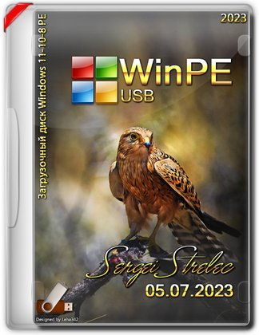
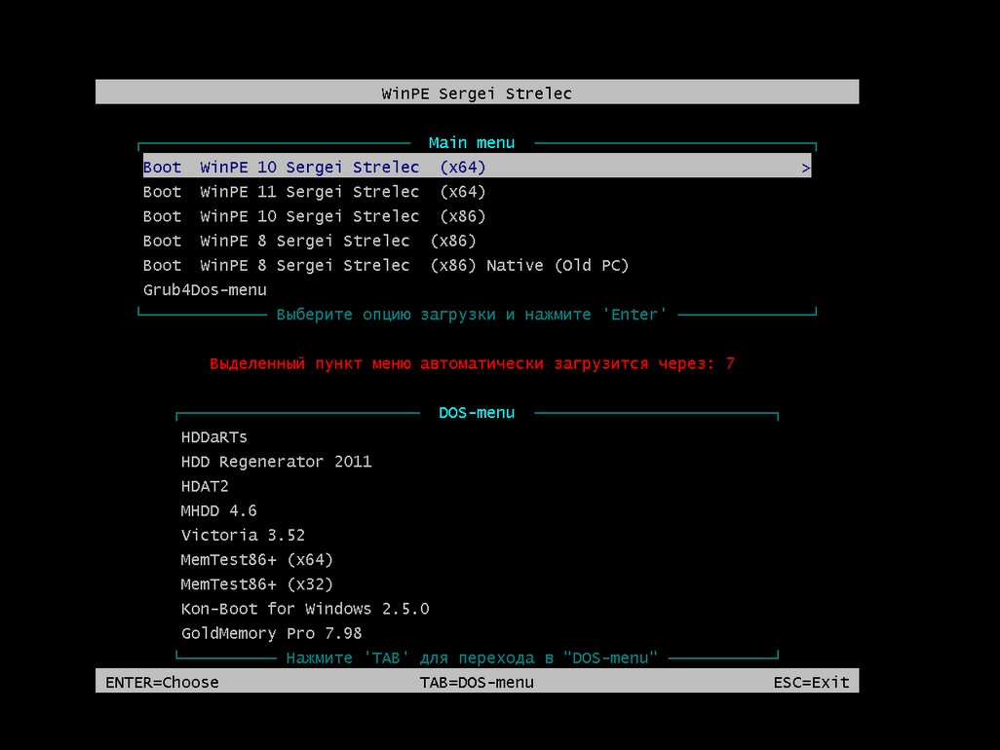
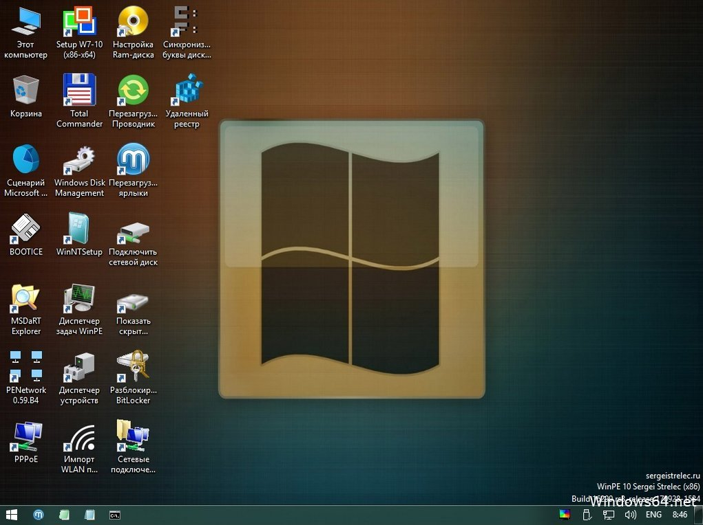
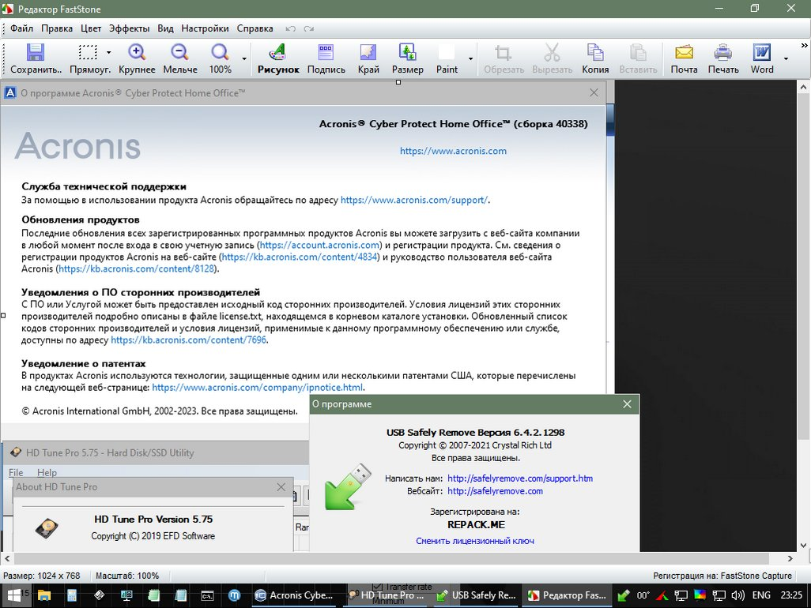

WinPE 11-10-8 Sergei Strelec (x86/x64/Native x86) 2023.07.05 [Ru]

Загрузочный диск на базе Windows 11, 10 и 8 PE - для обслуживания компьютеров, работы с жесткими дисками и разделами, резервного копирования и восстановления дисков и разделов, диагностики компьютера, восстановления данных, антивирусной профилактики и установки ОС Windows.
{kind=link}

{kind=link}

{kind=link}

Состав сборки открыть закрыть
WinPE 11 x64
WinPE 10 x64
WinPE 10 x86
WinPE 8 x86
WinPE 8 x86 (Native)
Состав программ x86 образа: открыть закрыть
-
Бэкап и восстановление:
-
Acronis Cyber Protect Home Office Build 40338 (Rus)
Acronis True Image 2019 Build 17750 (Rus)
Acronis True Image 2016 Build 6595 (Rus)
Acronis True Image 2014 Build 6673 (Rus)
Acronis Backup Advanced 11.7 (Rus)
Active Disk Image 10.0 (Rus)
R-Drive Image 7.1 Build 7108 (Rus)
StorageCraft Recovery Environment 5.2.5.37836 (Rus)
Symantec Ghost 12.0.0.11531 (Eng)
Paragon Hard Disk Manager 15 Premium 10.1.25.1137 (Rus)
TeraByte Image for Windows 3.60 (Rus)
AOMEI Backupper 7.2.3 (Rus)
EaseUS Todo Backup 2023 Build 20230222 (Eng)
Drive SnapShot 1.50.0.1208 (Eng)
Macrium Reflect 7.2.4473 (Eng)
Veritas System Recovery 22.0.0.62226 (Rus)
Disk2vhd 2.02 (Eng)
Жесткий диск:
-
Управление дисками, системное
Acronis Disk Director 12.5 Build 163 (Rus)
EASEUS Partition Master 16.8 (Eng)
Paragon Hard Disk Manager 15 Premium 10.1.25.1137 (Rus)
MiniTool Partition Wizard 12.7 (Eng)
AOMEI Partition Assistant 10.0 (Rus)
AOMEI Dynamic Disk Manager 1.2.0 (Eng)
DiskGenius Professional 5.5.0.1488 (Rus)
NIUBI Partition Editor 9.6.3 (Eng)
Active Partition Manager 6.3.05
Defraggler 2.22.995 (Rus)
O&O Defrag 23.0 (Eng)
HDD Low Level Format Tool 4.40 (Eng)
Active KillDisk 14.0.27 (Eng)
Active Disk Editor 7.3.01 (Eng)
DiskCopy 1.1.6.0 beta
Diskpart GUI Micro 2.0
Диагностика:
-
HD Tune Pro 5.75
Check Disk GUI (Rus)
Hard Disk Sentinel 6.10 (Rus)
CrystalDiskInfo 8.17.14 (Rus)
CrystalDiskMark 8.0.4c (Rus)
AIDA64 Extreme 6.88.6400 (Rus)
BurnInTest 8.1 Build 1025 (Eng)
PerformanceTest 10.2 Build 1002 (Eng)
RWEverything 1.7
CPU-Z 2.06.1
PassMark MonitorTest 4.0 Build 1001
HWiNFO 7.50.5150.0
HDDScan 4.1.0.29
OCCT Perestroika 4.5.1
Keyboard Test Utility 1.4.0
HDD Regenerator 2011
IsMyLcdOK 5.32
R.tester 1.20.11.21
PC3000 Disk Analyzer 2.0.4.451
Drevitalize 4.10
Linpack Xtreme 1.1.5
LinX 0.6.5
Сетевые программы:
-
Opera (Rus)
Download Master 6.18.1.1633 (Rus)
TeamViewer 15 (Rus)
PENetwork 0.59.B12 (Rus)
Ammyy Admin 3.9 (Rus)
AeroAdmin 4.9 Build 3612 (Rus)
AnyDesk 7.1.13 (Rus)
Supremo 4.8.4.3614 (Rus)
µTorrent 3.5.5 (Rus)
FileZilla 3.62.2(Rus)
PuTTY 0.78 (Eng)
OpenVPN 2.5.8 (Rus)
UltraVNC 1.4.3.0 (Eng)
TightVNC 2.8.78 (Eng)
Radmin 3.5.2.1 (Rus)
Radmin VPN 1.3.4570.5 (Rus)
Advanced IP Scanner 2.5.4594.1 (Rus)
FtpUse 2.2
Skype
Сброс паролей:
-
Windows Login Unlocker 2.0
Reset Windows Password 7.0.5.702 (Rus)
PCunlocker 5.6 (Eng)
Simplix Password Reset 5.1 (Rus)
Другие программы:
-
UltraISO 9.7.5.3716 (Rus)
PowerISO 8.5 (Rus)
gBurner 5.2 (Rus)
Total Commander 9.00 (Rus)
FastStone Capture 7.7 (Rus)
IrfanView 4.38 (Rus)
STDU Viewer (Rus)
Microsoft Office 2007 (Rus)
Bootice 1.3.3.2 (Eng)
Unlocker 1.9.2 (Rus)
WinNTSetup 4.2.5 (Rus)
78Setup 2.4
Check Device 1.0.1.70 (Rus)
Double Driver 4.1.0 (Rus)
Imagex
GImageX 2.2.0 (Eng)
Media Player Classic (Rus)
EasyBCD 2.4.0.237 (Rus)
EasyUEFI 5.0.1 (Eng)
Far Manager 3.0 Build 6161 (Rus)
Dism++ 10.1.1002.1
WinHex 20.8 SR1
CIHexViewer 2.0
TeraCopy 3.6.0.4
FastCopy 3.70
Everything 1.4.1.1022
WinDirStat 1.1.2
NirLauncher 1.30.3
Runtime Captain Nemo 7.00
HardLink ShellExtension
Acronis Shell Extension
Редактор удаленного реестра
Registry Editor PE
OemKey
CMOS De-Animator 3
VMware Tools 11.1.5 build 16724464
Средство восстановления Windows (WinPE 10)
Восстановление данных:
-
R-Studio 9.2 Build 191161 (Rus)
Active File Recovery 22.0.8 (Eng)
Active Partition Recovery 22.0.1 (Eng)
Active UNDELETE 19.0.0 (Eng)
Runtime GetDataBack 5.61 (Eng)
Runtime GetDataBack for NTFS 4.33 (Rus)
Runtime GetDataBack for FAT 4.33 (Rus)
Runtime RAID Reconstructor 5.01
EaseUS Data Recovery 16.0.0 Build 20230606 (Rus)
R.saver 9.5.0.6264 (Rus)
TestDisk 7.2
Recover Keys 11.0.4.233
ShadowCopyView
Restore WLAN passwords
Состав программ x64 образа: открыть закрыть
-
Бэкап и восстановление:
-
Acronis Cyber Protect Home Office Build 40338 (Rus)
Acronis True Image 2019 Build 17750 (Rus)
Acronis True Image 2016 Build 6595 (Rus)
Acronis True Image 2014 Build 6673 (Rus)
Acronis Cyber Protect 15.0.27009 (Rus)
Active Disk Image 23.0.0 (Rus)
R-Drive Image 7.1 Build 7108 (Rus)
StorageCraft Recovery Environment 5.2.5.37836 (Rus)
Symantec Ghost 12.0.0.11531 (Eng)
Paragon Hard Disk Manager 15 Premium 10.1.25.1137 (Rus)
TeraByte Image for Windows 3.60 (Rus)
AOMEI Backupper 7.2.3 (Rus)
EaseUS Todo Backup 2023 Build 20230608 (Eng)
Drive SnapShot 1.50.0.1208 (Eng)
Macrium Reflect 8.1.7544 (Rus)
Veritas System Recovery 22.0.0.62226 (Rus)
Disk2vhd 2.02 (Eng)
Жесткий диск:
-
Управление дисками, системное
Acronis Disk Director 12.5 Build 163 (Rus)
EaseUS Partition Master 17.8.0 Build 20230627 (Rus)
EaseUS Disk Copy 5.5 Build 20230614 (Eng)
Paragon Hard Disk Manager 15 Premium 10.1.25.1137 (Rus)
MiniTool Partition Wizard 12.7 (Eng)
AOMEI Partition Assistant 10.0 (Rus)
AOMEI Dynamic Disk Manager 1.2.0 (Eng)
DiskGenius Professional 5.5.0.1488 (Rus)
NIUBI Partition Editor 9.6.3 (Eng)
Active Partition Manager 6.3.05
Defraggler 2.22.995 (Rus)
O&O Defrag 23.0 (Eng)
HDD Low Level Format Tool 4.40 (Eng)
Active KillDisk 14.0.27 (Eng)
Active Disk Editor 7.3.01 (Eng)
DiskCopy 1.1.6.0 beta
Diskpart GUI Micro 2.0
Диагностика:
-
HD Tune Pro 5.75
Check Disk GUI (Rus)
Hard Disk Sentinel 6.10 (Rus)
CrystalDiskInfo 8.17.14 (Rus)
CrystalDiskMark 8.0.4c (Rus)
AIDA64 Extreme 6.88.6400 (Rus)
BurnInTest 8.1 Build 1025 (Eng)
PerformanceTest 10.2 Build 1002 (Eng)
CPU-Z 2.03.1
PassMark MonitorTest 4.0 Build 1001
HWiNFO64 7.42
OCCT 10.0.5
Keyboard Test Utility 1.4.0
IsMyLcdOK 5.32
HDD Regenerator 2011
R.tester 1.20.11.21
PC3000 Disk Analyzer 2.0.4.451
Drevitalize 4.10
Linpack Xtreme 1.1.5
LinX 0.6.5
Сетевые программы:
-
Opera (Rus)
Download Master 6.18.1.1633 (Rus)
PENetwork 0.59.B12 (Rus)
TeamViewer 15 (Rus)
Ammyy Admin 3.9 (Rus)
AeroAdmin 4.9 Build 3612 (Rus)
AnyDesk 7.1.13 (Rus)
Supremo 4.8.4.3614 (Rus)
µTorrent 3.5.5 (Rus)
FileZilla 3.62.2 (Rus)
PuTTY 0.78 (Eng)
OpenVPN 2.5.8 (Rus)
UltraVNC 1.4.3.0 (Eng)
TightVNC 2.8.78 (Eng)
Radmin 3.5.2.1 (Rus)
Radmin VPN 1.3.4570.5 (Rus)
Advanced IP Scanner 2.5.4594.1 (Rus)
FtpUse 2.2
Skype
Сброс паролей:
-
Windows Login Unlocker 2.0
Reset Windows Password 7.0.5.702 (Rus)
PCunlocker 5.6 (Eng)
Simplix Password Reset 5.1 (Rus)
Другие программы:
-
UltraISO 9.7.5.3716 (Rus)
PowerISO 8.5 (Rus)
gBurner 5.2 (Rus)
Total Commander 9.00 (Rus)
FastStone Capture 7.7 (Rus)
IrfanView 4.38 (Rus)
STDU Viewer (Rus)
Microsoft Office 2007 (Rus)
Bootice 1.3.3.2 (Eng)
Unlocker 1.9.2 (Rus)
WinNTSetup 5.3.1 (Rus)
78Setup 2.4
Check Device 1.0.1.70 (Rus)
Double Driver 4.1.0 (Rus)
Imagex
GImageX 2.2.0 (Eng)
Media Player Classic (Rus)
EasyBCD 2.4.0.237 (Rus)
EasyUEFI 5.0.1 (Eng)
Far Manager 3.0 Build 6161 (Rus)
Dism++ 10.1.1002.1
WinHex 20.8 SR1
CIHexViewer 2.0
TeraCopy 3.6.0.4
FastCopy 3.70
Everything 1.4.1.1022
WinDirStat 1.1.2
NirLauncher 1.30.3
Runtime Captain Nemo 7.00
HardLink ShellExtension
Acronis Shell Extension
TreeSize 9.0.1.1830
Редактор удаленного реестра
Registry Editor PE
OemKey
ShowKeyPlus 1.1.18.0
CMOS De-Animator 3
Paragon HFS+ for Windows 11.4.298
Paragon Linux File Systems for Windows 5.2.1183
VMware Tools 11.1.5 build 16724464
Средство восстановления Windows (WinPE 10, 11)
Восстановление данных:
-
R-Studio 9.2 Build 191161 (Rus)
Active File Recovery 22.0.8 (Eng)
Active Partition Recovery 22.0.1 (Eng)
Active UNDELETE 19.0.0 (Eng)
Runtime GetDataBack 5.61 (Eng)
Runtime GetDataBack for NTFS 4.33 (Rus)
Runtime GetDataBack for FAT 4.33 (Rus)
Runtime RAID Reconstructor 5.01
EaseUS Data Recovery 16.0.0 Build 20230606 (Rus)
R.saver 9.5.0.6264 (Rus)
TestDisk 7.2
Recover Keys 11.0.4.235
ShadowCopyView
Restore WLAN passwords
Антивирусы: открыть закрыть
- SmartFix Tool - полное описание возможностей программы и инструкция на сайте автора simplix
Для обновления SmartFix Tool необходимо скачать программу с оф. сайта, и заменить в папке SSTR/MInst/Portable/Antivirus.
Также можно обновить непосредственно из под WinPE при наличии сети - Скачать и запустить SmartFix Tool.
Последняя версия будет скачана и запущена.
- Kaspersky Rescue Disk 2018 - Скачать актуальный ISO образ софициального сайта, и распаковать ISO образ в папку Linux/krd2018 на Вашей флешке.
- Dr.Web LiveDisk - Скачать актуальный ISO образ с
официального сайта, и распаковать ISO образ в папку Linux/DrWeb на Вашей флешке.
- Dr.Web CureIt! и Kaspersky Virus Removal Tool
В папке SSTR/MInst/Portable/Antivirus вместо Dr.Web CureIt! и Kaspersky Virus Removal Tool пустышки.
Необходимо скачать их актуальные версии с оф.сайта и положить в папку SSTR/MInst/Portable/Antivirus
вместо пустышек (заменить) Запуск из меню Пуск
Скачать актуальные версии всегда можно здесь:
Dr.Web CureIt!
Kaspersky Virus Removal Tool
При наличии сети, актуальные версии можно скачать и запустить из под WinPE, на что есть соответствующие ярлыки в меню Пуск
DOS программы: открыть закрыть
-
HDD Regenerator 2011
HDDaRTs 17.01.2023 (автор программы Ander_73)
BIBM++ 1.88 (автор программы Ander_73)
MHDD 4.6
Victoria 3.52
Memtest86+ 6.20
HDAT2 7.5
GoIdMemory PRO 7.85
Active Password Changer Professional 5.0
Ghost 11.5
BootIt Bare Metal 1.84
Eassos PartitionGuru
Kon-Boot for Windows 2.5.0
Hard Disk Sentinel for DOS 1.21
DRevitalize 3.32
CHZ Monitor Test 2.0
Сеть: открыть закрыть
- Поддерживаются подключения по протоколам TCP/IP, NetBIOS через TCP/IP, PPPoE и WLAN (Wi-Fi), WebDAV.
- Для использования Wi-Fi вам необходимо установить драйвер адаптера беспроводной сети.
- Установка из меню "Пуск", раздел "Драйверы".
- Подключение к сети Wi-Fi через программу PE Network, на вкладке Wi-Fi.
- За комплект драйверов WLAN спасибо conty

Цифровое пиратство © Большое Болдино